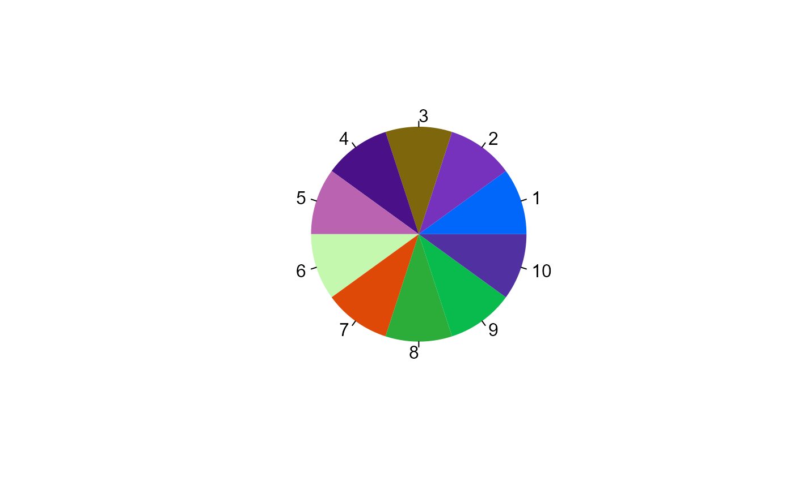

Note for colorblind use: "Okabe-Ito"
Addition of values happens before multiplication with factors.
Palette names are stripped of whitespace and lowered for name matching. All RColorBrewer and Viridis palettes are included.
All grDevices plotting functions are provided as palettes, simply use colors = "rainbow", "heat", "terrain", "topo" or "cm".
colorify(
n = NULL,
colors = character(0),
colors_lock = NULL,
colors_names = character(0),
colors_breakpoints = numeric(0),
gradient_n = n,
gradient_space = c("rgb", "Lab"),
gradient_interpolate = c("linear", "spline"),
hf = 1,
sf = 1,
lf = 1,
rf = 1,
gf = 1,
bf = 1,
hv = 0,
sv = 0,
lv = 0,
rv = 0L,
gv = 0L,
bv = 0L,
alpha = 1,
rev = FALSE,
plot = FALSE,
export = FALSE,
verbose = TRUE,
...
)default: NULL, else integer, amount of colors to create, if palette selected and more colors requested they will be generated
character (vector), combination of selecting palette(s) by name (options: see display_palettes()), and/or vector of R color names and/or color hexcodes
default: rep(FALSE, length(colors), numerical or logical index of colors (not) to be modified, if logical length != colors it will be cut or filled with TRUE/FALSE, prefix with '!' for logical vectors and '-' for numerical vectors to get inverse, see examples. If gradient_n %% length(colors) == 0, i.e. if gradient_n divisive by amount of colors without rest, set repeat given locking pattern
default: character(0), else character vector of color names
default: numeric(0), else numeric vector of breakpoints to colorRamp in between
default: n, else integer, amount of colors to output as gradient, after completing palette for n colors
default: "rgb", else "Lab", see ?grDevices::colorRamp()
default: "linear", else "spline", see ? grDevices::colorRamp()
hue factor, default: 1, multiply values by factor, proportional to base value of 1
saturation factor, default: 1, multiply values by factor, proportional to base value of 1
lightness/brightness factor, default: 1, multiply values by factor, proportional to base value of 1
red factor, default: 1, multiply values by factor, proportional to base value of 1
green factor, default: 1, multiply values by factor, proportional to base value of 1
blue factor, default: 1, multiply values by factor, proportional to base value of 1
hue value, default: 0, add value to values, linear from base value of 0
saturation value, default: 0, add value to values, linear from base value of 0
lightness/brightness value, default: 0, add value to values, linear from base value of 0
red value, default: 0, add value to values, linear from base value of 0
green value, default: 0, add value to values, linear from base value of 0
blue value, default: 0, add value to values, linear from base value of 0
numeric, sets color alpha values
default: FALSE, if TRUE, reverse order of colors
default: FALSE, if TRUE plot pie chart of color palette
default: FALSE, if TRUE: export = getwd(), if export = "string/", save hexcodes, rgb, and hsl values to export/colorify.csv
default: TRUE, else FALSE - to log status messages
additional arguments to pass on
vector of color hexcodes
Either generate theoretically maximally different colors, select an available R grDevices palette and/or modify the colors of the given gradient/palette
colorify(10, plot = TRUE)
#> 10 colors generated

#> [1] "#0166FAFF" "#7631BDFF" "#7E660DFF" "#491087FF" "#BA63B1FF" "#C4F8AFFF"
#> [7] "#DF4907FF" "#2CAC39FF" "#08BB4CFF" "#5131A2FF"